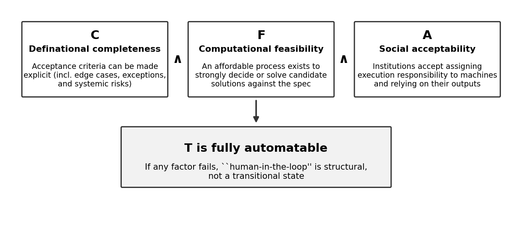
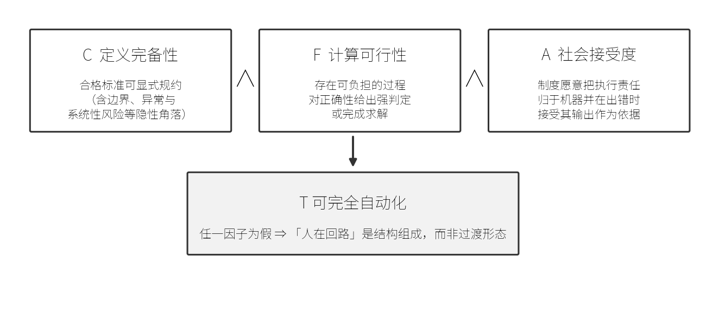
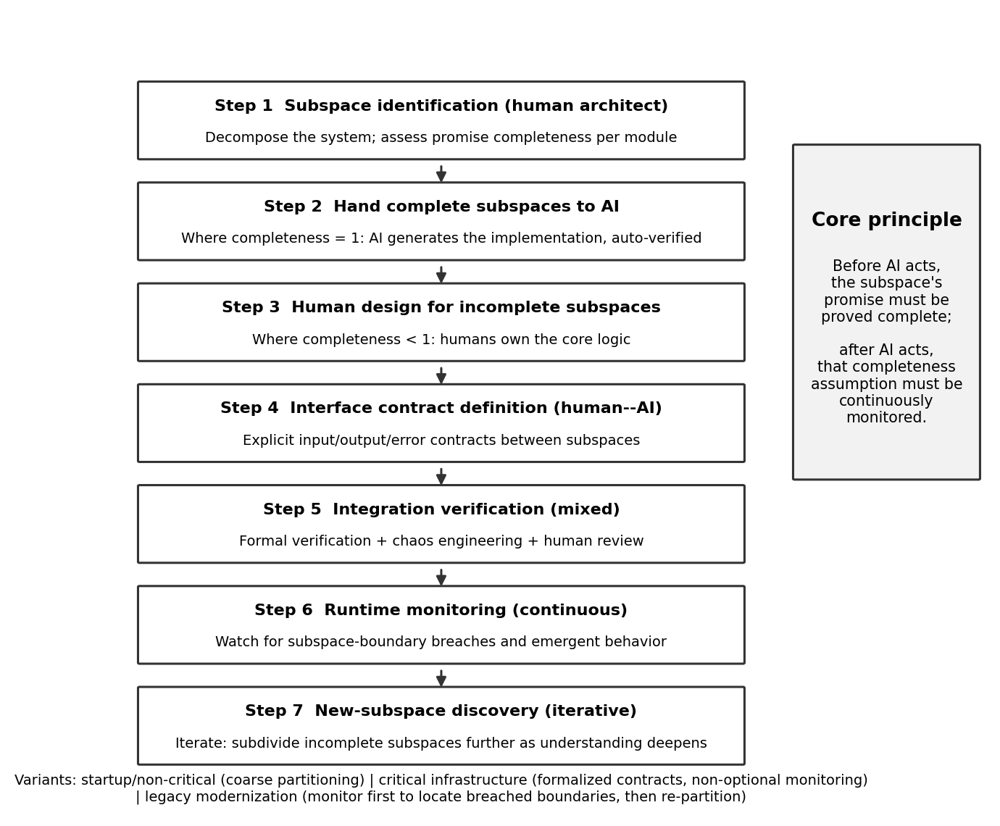
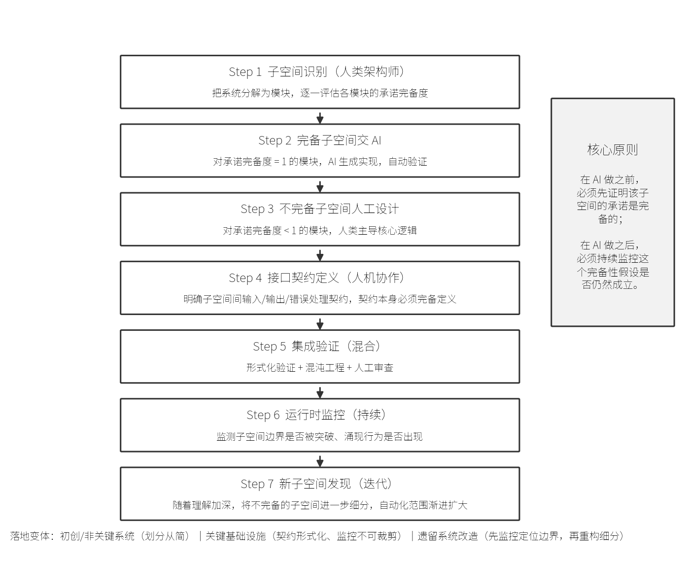
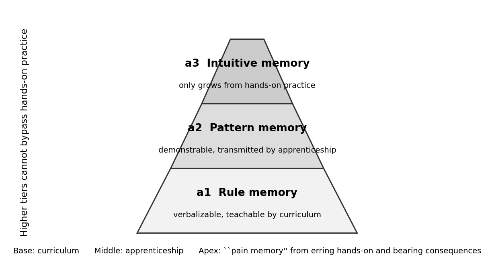
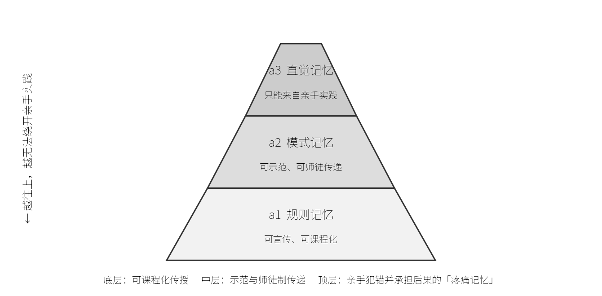
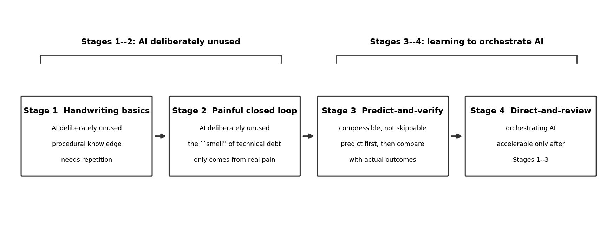
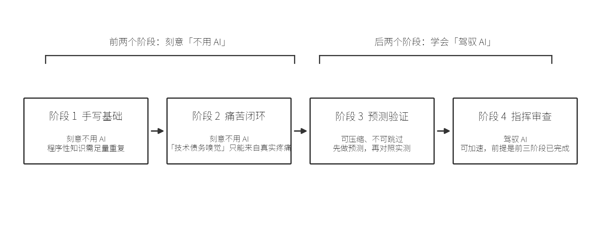

Rapid progress in the capability of large language models has given rise to two popular claims. The first: “AI will catch up with humans”—given continued scalable improvement, models will eventually replace humans in complex tasks, including software development. The second: “old knowledge no longer needs to be learned”—since the old human ways of working will be superseded anyway, the new generation can complete tasks directly with AI, without acquiring the knowledge of the old mode of production. This paper is a study of the societal impact of science and technology: it subjects both claims to a systematic examination, investigating the social boundaries of AI-driven automation expansion in production organization, responsibility assignment, and talent-cultivation institutions. To this end we propose the promise completeness framework: whether a task can be fully automated is not decided by how capable the model is, but by the conjunction of three factors—definitional completeness of the task specification, computational feasibility of verification or solution, and social acceptability of assigning execution responsibility to machines. On this framework the paper argues three propositions. (P1) The boundary of full automation is structurally decoupled from model-capability growth: AI will take over promise-complete subspaces, but will not become the principal agent of complex production. (P2) In domains where production knowledge and evaluative knowledge are coupled, human evaluative judgment depends on “pain memory”—learning from errors made with one's own hands and bearing their consequences—which cannot be acquired from observing AI-generated surface-level data; talent cultivation must therefore preserve a four-stage path from handwriting the basics, through a painful closed loop and predict-and-verify practice, to directing and reviewing AI. (P3) Organizational responsibility capacity is an independent hard constraint on automation expansion; it grows far more slowly than model capability, so review and accountability roles will remain the bottleneck for the foreseeable future. This paper reports no new controlled experiments; it is a conceptual-analysis study built on published empirical literature and historical cases.
大语言模型能力的快速进步，催生了两个流行论断：其一，「AI 将追上人类」，模型终将代替人类完成包括软件开发在内的复杂任务；其二，「旧知识不用学了」，新一代可以直接借助 AI 完成任务，无需学习旧生产方式的知识。本文属于科学技术对社会影响的研究：对这两个流行论断做一次系统检验，考察 AI 自动化扩张在生产组织、责任归属与人才培养制度上的社会边界。为此我们提出承诺完备度（promise completeness）分析框架：一个任务能否被完全自动化，不由模型多强决定，而由三个因子的合取决定——任务定义的可完备性、求解的计算可行性、以及社会对机器承担责任的接受度。在此框架上，本文论证三个命题：（P1）全自动化的边界与模型能力增长结构性解耦，AI 会接管承诺完备的子空间，但不会成为复杂生产的主体；（P2）在生产知识与评价知识相耦合的领域，人的评价判断力依赖亲手犯错并承担后果的「疼痛记忆」，无法通过观察 AI 生成的表现层数据习得，人才培养必须保留「手写基础 → 痛苦闭环 → 预测验证 → 指挥审查」的四阶段路径；（P3）组织责任容量是自动化扩张的独立硬约束，其扩展速度远慢于模型能力增长速度，审查与担责环节将长期保持瓶颈地位。本文不报告新的受控实验，是基于公开实证文献与历史案例的概念分析研究。
Over the past two years, two claims have circulated in public discussion of AI and production relations. Claim one: “AI will catch up with humans”—as long as scalable capability improvement continues, AI will be able to replace humans in a wide range of tasks, including highly complex ones such as software development. Claim two: “old knowledge no longer needs to be learned”—since existing human workers will eventually be displaced by AI, the next generation can simply use AI to complete tasks and need not learn the knowledge of the old mode of production.
过去两年，关于 AI 与生产关系的公开讨论中流传着两个说法。说法一：「AI 将追上人类」——只要规模化的能力进步继续，AI 将可以代替人类完成各种任务，包括软件开发这类高度复杂的任务。说法二：「旧知识不用学了」——既然旧的人类终将被 AI 替代，新的人类直接使用 AI 完成任务即可，无需学习旧生产方式的知识。
One of these judgments concerns “how far AI can go”; the other concerns “how people still need to learn”. Together they determine how individuals and organizations should invest over the next five to ten years, and they jointly shape the evolution of labor-market structure, responsibility institutions, and talent-cultivation systems—which is exactly the object of study of this paper as research on the societal impact of science and technology. Yet both claims lack an intermediate link: what decides whether a task can be handed over to a machine entirely? The default answer—“it is decided by model capability”—does not match the empirical facts. For software tasks, compilation, unit testing, and static checking are already essentially fully automated, while operating-system kernels, distributed-consensus protocols, and safety-critical systems are still required, even in the most optimistic projections, to retain human review. For rule-complete board games, Go can be played machine-against-machine, yet criminal sentencing in any rule-of-law society is not permitted to be handed to a machine.
这两个判断一个关乎「AI 能走到哪」，一个关乎「人还要怎么学」，恰好决定了未来五到十年间个人与组织应如何投入，也共同塑造了劳动力结构、责任制度与人才培养体系的演进方向——这正是本文作为科学技术社会影响研究的考察对象。然而二者都缺乏一个中间环节：一个任务被完全交给机器，究竟由什么决定？默认答案——「由模型能力决定」——与经验事实并不相符：同样是软件任务，编译、单元测试与静态检查已基本全自动，而操作系统内核、分布式一致性与安全关键系统即便在最乐观的预测中仍被要求保留人类审查；同样是规则完备的棋类，围棋可以由机器对弈，而量刑裁决在任何法治社会都不允许交给机器。
The thesis of this paper is: whether a task can be fully automated is decided by the conjunction of the three promise-completeness factors—definitional completeness, computational feasibility, and social acceptability—not by model capability. Around this thesis the paper makes three contributions:
本文的主张是：任务能否完全自动化，由「承诺完备度」三因子——定义完备性、计算可行性、社会接受度——的合取决定，而非由模型能力决定。 围绕这一主张，本文做出三点贡献：
(1) It proposes and formalizes the three-factor promise-completeness framework (Section 3), gives a unified cross-domain decision procedure, and analyzes its characteristic failure mode, “apparent completeness.” Unlike existing task-suitability frameworks (such as SML [23][24]), which infer “what machines can do now” from task characteristics, our framework takes responsibility assignment as an independent factor and addresses the normative boundary of “where, in principle, there should be no place without a human”;
（1）提出并形式化承诺完备度三因子框架（第 3 节），给出跨领域统一的判定方法，并分析其典型失效模式「表面完备」。不同于既有的任务适配性框架（如 SML [23][24]）以任务特征推断「机器现在能做什么」，本文以责任归属为独立因子，关注「哪里在原理上不应没有人的位置」这一应然边界；
(2) It applies the framework to software production, giving a seven-step implementation framework for subspace-wise gradual automation with three deployment variants (Section 4), and analyzes cross-subspace failure modes and governance responses using the Boeing 737 MAX accidents and the Rust project's LLM governance policy as cases;
（2）将框架落到软件生产，给出子空间渐进自动化的七步实施框架及三种落地变体（第 4 节），并以波音 737 MAX 事故与 Rust 项目的 LLM 治理政策为例分析子空间间的失败模式与治理响应；
(3) It argues for the non-outsourcability of evaluative judgment (Section 5) and for responsibility capacity as an independent hard constraint (Section 6), and derives from these the four-stage talent-cultivation path.
（3）论证评价判断力的不可外包性（第 5 节）与责任容量作为独立硬约束（第 6 节），并据此给出人才培养的四阶段路径。
This paper reports no new controlled experiments; all empirical evidence comes from published research, surveys, and accident investigations. Section 7 discusses the limitations of this choice explicitly.
本文不报告新的受控实验，所有实证论据均来自已公开发表的研究、调查与事故调查；第 7 节明确讨论这一选择的局限。
Evidence on the effectiveness of AI coding tools is highly divergent. In controlled experiments, laboratory tasks with GitHub Copilot reported a 55–56\ trial (RCT) at Google measured a speedup of roughly 21–26\ [20]; whereas the RCT published by METR in July 2025—sixteen senior open-source developers completing 246 real tasks on mature repositories they had maintained for an average of more than five years—measured that using early-2025 AI tools made them 19\ slower, while the developers expected a 24\ perceived a 20\ METR's February 2026 update, returning participants measured an 18\ speedup and newly recruited participants a 4\ confidence intervals crossing zero; the original estimate was declared a historical snapshot of a specific tool and setting [1]. An industry study by DX covering 121,000 developers shows a different side: 92.6\ developers use AI coding assistants every month and self-report saving about four hours per week, but organization-level productivity gains have entered a plateau of roughly 10\ 26.9\
AI 编码工具的效能证据高度分歧。受控实验中，GitHub Copilot 的实验室任务报告 55–56% 的提速 [19]，Google 的企业级随机对照试验（RCT）测得约 21–26% 的提速 [20]；而 METR 于 2025 年 7 月发布的 RCT——16 名资深开源开发者在自己平均维护五年以上的成熟仓库上完成 246 个真实任务——测得使用早期 2025 年 AI 工具反而慢 19%，且开发者事前预期快 24%、事后仍自认快 20% [1]。需要注意的是，METR 在 2026 年 2 月的更新中报告：回归参与者测得快 18%，新招募参与者慢 4%，两者置信区间均跨零，原始估计被声明为特定工具与场景下的历史快照 [1]。DX 覆盖 12.1 万名开发者的行业研究则显示：92.6% 的开发者每月使用 AI 编码助手，自报每周节省约 4 小时，但组织级生产率提升已进入约 10% 的平台期，AI 生成代码占生产代码比例升至 26.9% [2]。
These results do not contradict one another; together they point to the core evidence type used in this paper: the perception–measurement gap. Self-reported efficiency and objective throughput can diverge for long periods (in METR the two differed by nearly 40 percentage points [1]); any automation inference based on “developers feel faster” therefore requires independent verification. Effectiveness also depends strongly on the task environment and on participants' familiarity with the context—in greenfield codebases and in mature critical systems, the sign of the same tool can flip [1][20].
这些结果并不矛盾，它们共同指向本文使用的核心证据类型：感知—实测缺口。自报效率与客观吞吐可以长期背离（METR 中两者的差近 40 个百分点 [1]），因此任何以「开发者感觉更快」为依据的自动化推论都需要独立核验；同时，效能高度依赖任务环境与参与者对上下文的熟悉度——在绿色地块（greenfield）与成熟关键系统中，同一工具的符号可以相反 [1][20]。
The human–computer-interaction literature has long provided models of levels of automation: Parasuraman et al.\ characterized automation along four stages (information acquisition, analysis, decision selection, action implementation) with ten levels [16], and the automotive engineering community popularized the SAE J3016 levels 0–5. Parasuraman and Riley systematically summarized use, misuse, disuse, and abuse of automation [17]; among their findings, “automation bias”—the human tendency to over-trust machine output—remains one of the most robust human-factor findings in human-in-the-loop systems. The Boeing 737 MAX accidents (in which failures of MCAS, an “automated subspace,” propagated through interfaces into the flight crew's handling space) are a canonical case of automation bias compounded by responsibility mismatch [12]. The three-factor and seven-step frameworks of this paper can be read as a refinement and operationalization of this levels-of-automation tradition along the dimension of responsibility assignment.
人机交互文献早已给出自动化分级模型：Parasuraman 等将自动化按信息获取、分析、决策选择与动作执行四个阶段 × 十个等级刻画 [16]，汽车工程界则以 SAE J3016 的 0–5 级为大众熟知。Parasuraman 与 Riley 系统总结了自动化的使用、误用、弃用与滥用 [17]，其中「自动化偏差」——人倾向于过度采信机器输出——是人在回路系统最稳健的人因发现之一。波音 737 MAX 事故（MCAS 的故障经接口扩散至飞行员的处置空间）是自动化偏差与责任错配叠加的典型案例 [12]。本文的三因子框架与七步框架可视为对上述分级思想在「责任归属」维度上的细化与操作化。
Matthias introduced the “responsibility gap”: the behavior of learning machines cannot, on the causal chain, be traced back to an accountable human [18]. Elish describes the “moral crumple zone,” in which human operators of automated systems are positioned as responsibility “absorbers”—nominally responsible, but in substance lacking the judgment and the information that the responsibility presupposes [15]. A July 2026 position paper from Berkeley RDI, Towards Autonomous Software Development, proposed a 0–III classification of autonomy levels for software development (analogous to driving-automation levels) and pointed to the transfer of responsibility in the course of autonomization and to gaps in the legal framework of software responsibility [7]. This paper complements [7]: theirs characterizes “how responsibility is progressively transferred from humans to machines”; ours answers “which responsibilities will structurally remain on the human side, and why,” and further connects the responsibilities that remain with human talent-cultivation institutions.
Matthias 提出「责任缺口」：学习性机器的行为在因果链上无法追溯到可归责的人 [18]；Elish 以「道德褶皱区」描述自动化系统中人类操作者被定位为责任「吸收器」——名义上承担责任，实质上缺乏支撑该责任的判断力与信息 [15]。Berkeley RDI 2026 年 7 月的立场论文《Towards Autonomous Software Development》提出软件开发自主度的 0–III 级分类（类比自动驾驶分级），并指出自主化推进中的责任转移与软件责任法律框架的缺口 [7]。本文与 [7] 互补：对方刻画「责任如何逐级从人转移到机器」，本文回答「哪些责任在结构上会留在人侧、为什么」，并进一步把「留在人侧的责任」与人才培养制度联系起来。
In January 2026 Anthropic published an RCT in which 52 mostly junior engineers learned the unfamiliar Trio asynchronous library: the AI group scored 17 percentage points lower on a subsequent test (50\ nearly two letter grades), with the largest gap on debugging questions; task-time differences were not significant [4]. The key moderating variable is mode of use: participants who delegated code generation to AI entirely scored below 40\ to ask conceptual questions and wrote code with their own hands scored above 65\ studies (2020–2024) gives the isomorphic picture: AI assistance significantly improves performance scores on programming tasks (SMD = 0.86, 95\ or self-assessed understanding (SMD = 0.16, 95\ nonsignificant) [5]. Section 5 of this paper reads this body of evidence as empirical support for the claim that evaluative knowledge cannot be learned from surface-level performance data.
Anthropic 于 2026 年 1 月发布 RCT：52 名以初级为主的工程师学习陌生的 Trio 异步库，AI 组在随后测验中得分低 17 个百分点（50% 对 67%，接近两个字母等级），其中调试类题目差距最大；任务耗时差异不显著 [4]。关键调节变量是使用方式：把代码生成完全委托给 AI 的使用者得分低于 40%，而用 AI 提问概念、自己动手写代码的使用者得分在 65% 以上 [4]。Alanazi 对 35 项对照研究（2020–2024）的元分析给出了同构图景：AI 辅助使编程任务的表现分数显著提升（SMD = 0.86，95% CI [0.36, 1.37]），但对学习成效与理解自评几乎无影响（SMD = 0.16，95% CI [−0.23, 0.55]，不显著）[5]。本文第 5 节将这组证据解释为「评价知识不能从表现层数据中习得」的经验支撑。
Judging “what can be automated” at the occupation and task level has a long tradition. Frey and Osborne estimated the probability of computerization for occupations using three engineering bottlenecks—perception and manipulation, creative intelligence, and social intelligence [25]; their insight was that “structural constraints exist beyond capability,” but the bottlenecks remain capability-side heuristics. The Suitability for Machine Learning (SML) framework of Brynjolfsson et al.\ judges the ML suitability of a task by its characteristics—whether the objective function is clear, whether training data are available, whether feedback is timely, and so on [23][24]; it is the conceptual ancestor of our C and F factors. Shao et al., addressing the era of AI agents, propose a task-level auditing framework and the Human Agency Scale (H1–H5), which sorts tasks into four zones—automation green light, red light, R&D opportunity, and low priority—by “practitioner willingness × expert capability assessment,” explicitly framing their scale as a human-side complement to the SAE “AI-first” view [26].
在职业与任务层面判断「什么能被自动化」有较长传统。Frey 与 Osborne 以感知与操作、创造性智能、社会智能三大工程瓶颈估计职业的可计算机化概率 [25]，其洞见是「能力之外存在结构性约束」，但瓶颈仍是能力侧的启发式。Brynjolfsson 等提出的机器学习适配性（Suitability for Machine Learning, SML）框架以任务特征——目标函数是否清晰、训练数据是否可得、反馈是否及时等——判定任务的 ML 适配度 [23][24]，是本文 C、F 两因子的概念祖先；Shao 等针对 AI agent 时代提出任务级审计框架与 Human Agency Scale（H1–H5），以「从业者意愿 × 专家能力评估」将任务划入自动化绿灯/红灯/R&D 机会/低优先四区，并明确其分级是对 SAE「AI 优先」视角的人侧补充 [26]。
Our relationship to this lineage is inheritance plus divergence. We inherit its task-level (rather than occupation-level) unit of analysis. We diverge in three ways. First, we extend specification completeness from “having an objective and data” to promise completeness that covers hidden corners such as boundary conditions and systemic risks, and we characterize its failure mode as “apparent completeness.” Second, we establish social acceptability and responsibility assignment as an independent factor (A) on a par with definitional completeness and computational feasibility, connecting to the responsibility-gap [18] and moral crumple zone [15] literatures. Third, SML and HAS answer the “positive” question (what can be done now, what people want now), while our three factors answer the “normative” question—where, in principle and in institution, there cannot be a place without a human. The three are complementary: the positive distribution moves fast with tool iteration, while normative constraints decide the direction and the endpoint of the movement.
本文与该谱系的关系是继承与分叉：继承其「按任务而非按职业判定」的粒度；分叉在于，其一，本文把规约完备性从「有无目标与数据」扩展为「含边界条件与系统性风险等隐性角落的承诺完备」，并以「表面完备」刻画其失效模式；其二，本文把社会接受度/责任归属立为与定义完备性、计算可行性并列的独立因子（A），对接责任缺口 [18] 与道德褶皱区 [15] 文献；其三，SML 与 HAS 回答「实然分布」（现在能做什么、人现在想要什么），本文三因子回答「应然边界」——哪里在原理与制度上不能有人的位置。三者互补：实然随工具迭代快速移动，应然约束决定移动的方向与终点。
Definition (promise completeness). A task T is promise-complete if and only if all three of the following factors hold:
定义（承诺完备度）。称任务 T 的承诺完备，当且仅当以下三个因子同时成立：
C (definitional completeness): the acceptance criteria of T can be made explicit to a sufficiently fine granularity—not only the happy path, but also boundary conditions, exception handling, performance constraints, and systemic risks, i.e., all the “unsaid corners”—and the specification can be kept continuously aligned with the delivered artifact;
C（定义完备性）：T 的合格标准可以被显式规约到足够细的粒度——不仅包括正常路径，还包括边界条件、异常处理、性能约束与系统性风险等所有「没说到的角落」，且规约与被交付对象之间可持续对齐；
F (computational feasibility): there exists a process executable at acceptable cost that gives a sufficiently strong decision or solution for the correctness of candidate outputs against the specification;
F（计算可行性）：存在可在可接受成本内执行的过程，能对候选解关于规约的正确性给出足够强的判定或求解；
A (social acceptability): social institutions (law, ethics, industry practice) are willing to assign the execution responsibility of the task to a machine, and to accept the machine as the bearer of responsibility, or its output as the basis of responsibility, when errors occur.
A（社会接受度）：社会制度（法律、伦理、行业惯例）愿意把该任务的执行责任归于机器，且愿意在出错时接受机器作为责任主体或其输出作为责任依据。
Proposition (structural boundary). A task T can be fully automated ⇔ C(T) \wedge F(T) \wedge A(T). The three factors are in conjunction: if any one fails, “human-in-the-loop” is not a transitional form caused by technological immaturity, but a structural component of that task (Figure ).
命题（结构性边界）。任务 T 可被完全自动化 ⟺ C(T) ∧ F(T) ∧ A(T)。三个因子是合取关系：任一为假，「人在回路」就不是技术不成熟带来的过渡形态，而是该任务的结构性组成（图 1）。


We deliberately do not list “model capability” as a factor. Model capability decides “how far machines can help humans inside a promise-incomplete space”; promise completeness decides “whether such a space can, in principle, have no place for a human.” The former improves rapidly with scale; the latter is decided by task semantics and institutional structure. The two are decoupled—this is the precise statement of P1.
本文刻意不把「模型能力」列入因子。模型能力决定的是「在承诺不完备的空间里，机器能帮人多远」；而承诺完备度决定的是「这个空间在原理上能否没有人的位置」。前者随规模增长快速改善，后者由任务语义与制度结构决定，二者解耦——这是 P1 的精确表述。
“Promise completeness” is a term introduced by this paper (as of October 2026, a literature search found no prior academic use); it separates “whether a task's promise is complete enough to be entrusted to a machine” from the vague “whether capability is enough.” Its difference from task-suitability concepts such as SML [23][24] is that suitability measures how friendly a task is to current technology, whereas promise completeness measures whether the task specification itself can be closed to the degree of “no missing clause even with no human in the loop.”
「承诺完备度」（promise completeness）是本文提出的术语（2026 年 10 月检索未见学术文献先例），用以把「任务承诺是否完整到可以托付给机器」从笼统的「能力够不够」中分离出来；其与 SML [23][24] 等任务适配性概念的区别在于：适配性度量任务对当前技术的友好程度，承诺完备度度量任务规约本身能否封闭到「没有人的位置也不缺条款」的程度。
Table organizes representative domains by the three factors. Domains with all three values present serve to test the discriminating power of the framework: for software tasks, low-level tasks are high on all three factors and have been essentially automated, whereas high-level tasks are low on all three and must remain human-led—this is precisely why the public debate on “whether AI-written code is reliable” remains unresolved: the two sides are talking about different subspaces.
表 1 按三因子整理代表性领域。三类取值齐备的例子可用于检验框架的判别力：同为软件任务，低层任务三因子全高、已被基本自动化，高层任务三因子全低、必须保留人类主导——这正是「AI 写代码到底靠不靠谱」公共争论久拖不决的根源：争论双方谈论的是不同子空间。
| Go (the game) | High (complete rules) | High (search + learning) | High (no responsibility assignment) | AlphaGo-style full takeover [21] |
|---|---|---|---|---|
| Protein structure prediction | High (energy-minimizing conformation) | Low (exact solving unaffordable) | High | AI opened the space of approximate solutions [22] |
| Capital / serious-crime sentencing | Medium (rules codifiable) | Medium | ≈0 (society insists on human judgment) | Machines cannot be the deciding subject |
| Software, low level (compilation, unit tests, lint) | High | High | High | Already highly automated |
| Software, high level (OS kernels, distributed consensus, safety-critical) | Low (many hidden corners) | Low | Low | Human-led, AI-assisted |
| 领域 / 任务 | C 定义完备 | F 计算可行 | A 社会接受 | 自动化结局 |
|---|---|---|---|---|
| 纺织、机床、会计记账 | 高（指标可显式化） | 高 | 高 | 机器全盘接手 |
| 围棋对弈 | 高（规则完备） | 高（搜索+学习） | 高（无责任归属） | AlphaGo 式完全接管 [21] |
| 蛋白质结构预测 | 高（能量最小构型） | 低（严格求解不可负担） | 高 | AI 打开近似解空间 [22] |
| 死刑/重罪量刑 | 中（规则可成文） | 中 | ≈0（社会坚持人宣判） | 机器不可成为主体 |
| 软件低层（编译、单测、lint） | 高 | 高 | 高 | 已高度自动化 |
| 软件高层（内核、分布式一致性、安全关键） | 低（隐性角落多） | 低 | 低 | 人类主导，AI 辅助 |
The most dangerous failure is not a factor being explicitly false, but apparent completeness—a promise that is complete on paper while materially missing key clauses. Credit derivatives before the 2008 financial crisis are the canonical example: contract terms were precise, pricing models elegant, and the promise of any single contract highly complete; but the clause “systemic risk” was missing from the promise of the system as a whole, and the absence was statistically insignificant and invisible in normal times, until the crisis cashed it in [13]. The “passes the tests” status of AI-generated code is structurally isomorphic: test coverage is finite, and clauses not written into tests—maintainability, architectural fit, long-term evolvability—become visible only later. The implication for automation is: however high F and A are, the truth of C can only be maintained through continuous supervision—this sets up the monitoring obligation of Section 4 and the responsibility-capacity argument of Section 6.
最危险的失效不是某个因子明确为假，而是表面完备——承诺在纸面上完备、实质上缺失关键条款。2008 年金融危机前的信用衍生品即为例证：合同条款精确、定价模型优雅，单份合约的承诺高度完备；但「系统性风险」这一条承诺在整个体系中整体缺失，且该缺失在统计上不显著、平时不可见，直到危机将其兑现 [13]。AI 生成代码的「通过测试」是结构性同构的：测试覆盖有限，可维护性、架构契合度与长期演化能力等「没被写进测试的条款」滞后显现。表面完备对自动化的含义是：F 与 A 再高，C 的真实性也只能通过持续监督来维护——这为第 4 节的监控义务与第 6 节的责任容量埋下伏笔。
The natural corollary of the three factors is: do not ask “can the whole system be automated?” but “whose promise, in which subspace, is complete?” The best teacher is the aircraft autopilot: the same system allocates primacy by the promise completeness of each flight phase—automatic in cruise, human-led in takeoff and landing, and manual takeover mandatory at the decision height on approach. It should be noted that phasing human–machine roles is a mature tradition—SAE J3016 and the Parasuraman model [16] represent the “AI-first” view, and the Human Agency Scale [26] gives the human-side H1–H5 view; our partitioning criterion differs from all three: it is based neither on machine capability nor on human willingness, but on the promise completeness of the subspace—complete, and it is handed over; incomplete, and it stays on the human side; and whatever is handed over can be taken back at any time the completeness assumption fails. We import this principle into software production: decompose the system into subspaces, judge the three factors for each subspace independently, allocate human–machine primacy by completeness, and carry a monitoring obligation for the continued validity of each completeness assumption.
三因子的自然推论是：不要问「整个系统能不能自动化」，而要问「哪个子空间的承诺是完备的」。最好的老师是飞机的自动驾驶仪：同一套系统，按飞行阶段的承诺完备度分配主导权——巡航时自动，起降时人类主导，进近到决断高度必须人工接管。需要说明，按阶段给人机分级是成熟传统——SAE J3016、Parasuraman 模型 [16] 是「AI 优先」的代表，Human Agency Scale [26] 则给出人侧视角的 H1–H5；本文的划界标准与三者都不同：既非按机器能力、也非按人的意愿，而是按子空间的承诺完备度——完备则交出去，不完备则留在人侧，且交出去的随时因完备性假设失效而收回。我们把这一原则搬到软件生产：将系统分解为子空间，对每个子空间独立判定三因子，再按完备度分配人机主导权，并对完备性假设的持续成立负有监控义务。
Figure gives the complete flow of the seven-step framework; its textual principle is a single sentence: before AI acts, the completeness of that subspace's promise must be proved; after AI acts, the continued validity of that completeness assumption must be monitored.
图 2 给出七步框架的完整流程，其文字原则只有一句：在 AI 做之前，必须先证明该子空间的承诺是完备的；在 AI 做之后，必须持续监控这个完备性假设是否仍然成立。


The same framework is tailored to three organizational contexts: (1) startups / non-critical systems—perform a coarse-grained subspace partitioning first, automate only the “obviously complete” parts, and keep interface contracts and monitoring lightweight; (2) critical infrastructure—completeness assessments are strict, interface contracts must be formalized, and runtime monitoring is non-optional; (3) legacy modernization—run monitoring first to locate where historical evolution has breached subspace boundaries, then re-partition gradually following Step 7.
同一框架在三种组织情境下的裁剪：（1）初创/非关键系统——先做粗粒度子空间划分，只自动化「明显完备」的部分，契约与监控从简；（2）关键基础设施——完备度评估从严，接口契约必须形式化，运行时监控不可裁剪；（3）遗留系统改造——先运行监控定位子空间边界被历史演进突破的位置，再按 Step 7 逐步重构细分。
The most dangerous failure of subspace automation is not a fault inside a subspace, but a failure crossing subspace boundaries: on the Boeing 737 MAX, a fault of MCAS, an “automated subspace,” propagated through interfaces into the “human subspace,” while the flight crew did not know of that subspace's existence and in substance lost the ability to take over [12]. In general, cross-subspace failures come in three types: fuzzy boundaries (humans do not know what the machine is managing), state asynchrony (when the machine disengages, the human receives incomplete context), and switching latency (the takeover decision lags the time constant of the failure).
子空间自动化最危险的不是子空间内部出错，而是故障跨越子空间边界：波音 737 MAX 上，MCAS 作为「自动子空间」的故障通过接口扩散进入「人类子空间」，而飞行员对该子空间的存在并不知情，实质上丧失接管能力 [12]。归纳起来，子空间间失败有三类：边界模糊（人类不知道机器在管什么）、状态不同步（机器退出时人拿到的上下文不完整）、切换延迟（接管决策滞后于故障时间常数）。
The open-source community has produced an isomorphic governance response. In August 2026 the Rust project adopted a formal LLM policy for rust-lang/rust: LLMs may be used for answering, analysis, review, and translation, but must not implement on one's behalf; LLM review conclusions may not replace human review; concealing usage is treated as a Code-of-Conduct violation; and a circuit-breaker mechanism pauses acceptance when LLM-created merge PRs exceed half of the total within any six-week period [9][10]. In substance, this policy treats “which subspaces AI is allowed to dominate” as a governance object that requires explicit delimitation and continuous measurement—the same direction as our framework.
开源社区已出现同构的治理响应。Rust 项目于 2026 年 8 月为 rust-lang/rust 通过正式 LLM 政策：LLM 可用于回答、分析、评审与翻译，但不得代为实现；LLM 的评审结论不得替代人工评审；隐瞒使用视同违反行为准则；并设熔断机制——任一六周周期内 LLM 创建的合并 PR 占比过半即暂停受理 [9][10]。该政策实质上是把「哪些子空间允许 AI 主导创作」作为一个需要显式划界、持续度量的治理对象，与本文框架同向。
To judge whether an industry can be taken over wholesale, one needs to ask only two questions: knowledge decoupling—can someone who cannot produce nevertheless evaluate the outcome effectively? And process decoupling—once production has started, can it run to completion without a human watching? Textiles, machine tools, and bookkeeping answer “yes” to both, so machines took over wholesale; artistic creation, strategic decision-making, complex medical care, and legal adjudication answer “no” to both—evaluation is part of production, and humans must stay in the loop. High-level software development belongs to the latter group: evaluating a piece of code requires understanding its semantics, and the act of coding is itself pervaded by micro-evaluations (naming, abstraction, trade-offs).
判断一个行业能否被全盘接手，只需问两个问题：知识解耦——不会生产的人能否有效评价结果？过程解耦——生产启动后能否不需要人盯着就跑完？纺织、机床、会计对两问均答「是」，故机器全盘接手；艺术创作、战略决策、复杂医疗与法律裁判对两问均答「否」——评价即生产的一部分，人必须留在环里。软件开发的高层属于后者：评估一段代码需要理解语义，而编码行为本身处处是微观评价（命名、抽象、取舍）。
What demands more vigilance is pseudo-decoupling: much automation does not genuinely satisfy the two questions; it quietly redefines “good” instead (Table ).
更要警惕的是伪解耦：不少自动化并未真正满足双问，只是悄悄重新定义了「好」（表 2）。
| Cook a good meal | One standard burger in 3 minutes | Flavor depth, cultural context, emotional connection |
|---|---|---|
| Write good software | Code that passes the tests | Maintainability, architectural fit, long-term evolvability |
| 原始任务 | 降维后的自动化版本 | 被悄悄丢弃的维度 |
|---|---|---|
| 做一块好布 | 强度 ≥ 50N、色牢度 ≥ 4 级 | 手感、透气性、随时间变化的质感 |
| 做一顿好饭 | 3 分钟出一份标准汉堡 | 风味层次、文化语境、情感联结 |
| 写一个好软件 | 生成一段能通过测试的代码 | 可维护性、架构契合、长期演化能力 |
The test question for pseudo-decoupling is: is what was simplified away precisely the most valuable part?
伪解耦的检验问题是：被简化的，是不是恰恰是最值钱的那一部分？
In the production of complex products, production knowledge and evaluative knowledge are coupled: cultivating the ability to evaluate product quality cannot avoid hands-on participation in production. The root reason is that genuine judgment comes from “pain memory”—errors made with one's own hands and paid for with real consequences; failure modes only sediment into intuition that precedes deliberation in the next decision when they are bound to real costs (rework, accidents, accountability). We divide evaluative capability into three tiers (Figure ): a1 rule memory (verbalizable, teachable by curriculum), a2 pattern memory (demonstrable, transmissible by apprenticeship), and a3 intuitive memory (grows only from hands-on practice). The higher the tier, the less one can bypass hands-on practice; observing AI-generated outcomes stays at the surface level and cannot substitute for acquiring the base tiers.
复杂产品生产中，生产知识与评价知识是耦合的：想培养对产品质量的评价能力，就无法避免手动参与生产。根本原因在于，真正的判断力来自亲手犯错并承担后果的「疼痛记忆」——错误模式只有与真实的代价（返工、事故、责任）绑定，才能沉淀为下次决策前先于思考的直觉。我们把评价能力分为三层（图 3）：a1 规则记忆（可言传，可课程化）、a2 模式记忆（可示范，可师徒传递）、a3 直觉记忆（只能在亲手实践中长出来）。越往上走，越无法绕开亲手实践；对 AI 生成结果的观察停留在表现层，无法替代基础层的获得。


Software engineering harbors an underrated fact: software has no physical embodiment, and its execution can only be simulated in the mind —hand-writing code is the only mandatory deductive training in which “it simply does not run unless you get it right.” The closed loop of the senior engineer—writing with one's own hands (forced to reason precisely about variable states and control flow), maintaining it oneself (getting burned by mines planted by one's own code three years earlier), bearing the consequences (failures, data corruption), forming intuition (“where it will hurt” appearing before thought)—every step is a component of pain memory.
软件工程有一个被低估的事实：软件没有物理实体，运行过程只能靠心智模拟，手写代码是唯一「不写就跑不通」的强制推演训练。资深工程师的闭环——亲手写（被迫精确推演变量状态与控制流）→ 自己维护（被三年前的自己埋的雷炸醒）→ 承担后果（故障、数据损坏）→ 形成直觉（「哪里会疼」先于思考出现）——每一步都是疼痛记忆的组成部分。
Three bodies of evidence support the mechanism. First, Anthropic's RCT shows that learners who delegated code generation to AI scored 17 percentage points lower on the test, with the largest gap on debugging, while learners who used AI to learn concepts and wrote code with their own hands were unaffected [4]—what decides gain or loss is not whether AI is used, but whether the hands-on link is skipped. Second, the meta-analysis of 35 studies shows significant improvement in task performance but no significant improvement in conceptual understanding [5]—“finishing” and “learning” can be statistically separated, which is exactly the projection of the knowledge decoupling assumption into learning settings. Third, the error profile of AI is systematically different from that of humans: human errors are mostly predictable patterns (fatigue typos, logical slips), whereas AI errors often “look right” semantically; Veracode's continuous scanning of more than 100 models found that 45\ vulnerabilities, and newer, larger models were not safer [3]— without hand-writing fundamentals, one cannot even see the errors.
三组证据支持上述机制。其一，Anthropic 的 RCT 显示，把代码生成委托给 AI 的学习者测验低 17 个百分点、调试差距最大，而用 AI 学概念、亲手写代码的学习者不受影响 [4]——决定损益的不是用不用 AI，而是亲手实践环节是否被跳过。其二，35 项研究的元分析显示任务表现显著提升而概念理解无显著改善 [5]——「做完」与「学会」在统计上可以分离，正是知识解耦假设在学习场景中的投影。其三，AI 的错误形态与人的错误形态系统性不同：人的错误多为可预测模式（疲劳笔误、逻辑疏忽），AI 的错误则常在语义上「看起来对」；Veracode 对 100+ 模型的持续扫描发现 45% 的生成代码含 OWASP Top 10 漏洞，且更新、更大的模型并未更安全 [3]——没有手写功底的人，连错都看不出来。
The normative claim of this paper is not “reject AI,” but the order cannot be scrambled: the first two stages deliberately forgo AI, and the last two stages learn to orchestrate it (Figure ).
本文的规范性主张不是「拒绝 AI」，而是顺序不能乱：前两阶段刻意不用 AI，后两阶段学会驾驭 AI（图 4）。


Stage 1 “handwriting the basics”: procedural knowledge needs sufficient repetition to be internalized. Stage 2 “painful closed loop”: the “smell” of technical debt can only come from real pain and cannot be simulated. Stage 3 “predict-and-verify”: compressible in part, but not skippable. Stage 4 “direct-and-review”: accelerable, provided Stages 1–3 are complete.
阶段 1「手写基础」的程序性知识需要足量重复才能内化；阶段 2「痛苦闭环」的「技术债务嗅觉」只能来自真实疼痛，无法模拟；阶段 3「预测验证」可被部分压缩但不能跳过；阶段 4「指挥审查」可以加速，前提是前三阶段已完成。
A horizontal institutional comparison deserves note. Medicine requires years of residency plus licensure plus individual accident liability; aviation, despite autopilots, still requires pilots to fly manually on a regular basis and to pass simulator checks; law prohibits practice without apprenticeship. Software engineering is only decades old as a discipline: no license, no residency, extremely high societal tolerance—it should demand stricter institutions, yet in reality it is looser. It must be honestly pointed out that almost no institution in industry currently cultivates talent along this path: corporate KPIs generally push AI usage rates up, and “not using AI” can even become a reason for a poor performance review. This path is, for now, more “normative” than “positive”—but precisely because nobody does it, whoever walks it first will possess judgment that others cannot replace.
横向的制度对照值得注意：医学有数年的住院医师规培加执照与个人事故责任；航空即使有自动驾驶，飞行员仍须定期手动飞行并接受模拟机考核；法律无实习不得执业。软件工程学科只有数十年历史，无执照、无规培、社会容忍度极高——它本该要求更严格的制度，现实却更宽松。需要诚实指出：目前业界几乎找不到按此路径培养人才的机构，企业 KPI 普遍强推 AI 使用率，「不用 AI」甚至可能成为绩效差评理由。这条路径目前更多是「应然」而非「实然」——但也正因为无人这么做，谁先走通，谁先拥有别人替代不了的判断力。
Twisting the first two threads together: even if models keep improving, there remains a hard constraint that does not depend on model capability—how much responsibility human organizations can carry. Berkeley RDI calls this the “responsibility transfer” problem in the course of autonomization [7]; the corresponding concepts in the literature are the responsibility gap [18] and the moral crumple zone [15]: human reviewers are positioned as responsibility “absorbers”—their signature lands in the approval box, while in substance they lack the judgment and the information that the responsibility presupposes.
把前两条线拧到一起：即便模型持续变强，还有一个不取决于模型能力的硬约束——人类组织能扛住多少责任。Berkeley RDI 称之为自主化推进中的「责任转移」问题 [7]；文献中与之对应的概念还有责任缺口 [18] 与道德褶皱区 [15]：人类审查者被定位为责任的「吸收器」——签字落在批准栏上，实质却没有足够的判断力与信息支撑。
Responsibility can be divided into three layers: L1 operational responsibility (code review, test verification)—partially outsourcable to AI, but what is outsourced is execution, not responsibility itself; L2 judgment responsibility (architectural trade-offs, risk assessment)—hard to outsource, because it demands accountability for the hidden corners not written into the specification, exactly where factor C is weakest; L3 strategic and ethical responsibility (value judgments, interest coordination, accountability)—until AI obtains the qualification of a “responsibility-bearing subject,” it can only be carried by humans.
责任可分为三层：L1 操作责任（代码审查、测试验证）——可部分外包给 AI，但外包的是执行而非责任本身；L2 判断责任（架构权衡、风险评估）——难以外包，因为它要求对没被写进规约的隐性角落负责，恰是 C 因子最薄弱处；L3 战略与伦理责任（价值判断、利益协调、问责）——在 AI 获得「责任主体资格」之前，只能由人扛。
Three public datasets point to the same constraint from different sides. Black Duck's 2026 survey of software developers: 52\ consider manual review the primary bottleneck of AI-generated code, and 51\ grew by more than 50\ repair as the biggest bottleneck [6]. METR's RCT showed senior developers getting slower with AI on mature repositories, with self-assessment and actual outcome pointing in opposite directions [1]. Veracode's continuous scanning shows 45\ containing security vulnerabilities, with no improvement across model generations [3]. McKinsey's comparative analysis provides the positive corroboration: the companies benefiting significantly are not those that “shipped a tool,” but those that restructured the development process and turned people into orchestrators of AI [8]—the bottleneck is not on the generation side, but on the review and responsibility-acceptance side.
三组公开数据从不同侧面指向同一约束。Black Duck 2026 年对软件开发者的调查：52% 受访者认为人工审查已是 AI 生成代码的首要瓶颈，51% 认为安全测试是瓶颈；在 AI 代码量增长超过 50% 的团队中，57% 认为安全测试与漏洞修复是最大瓶颈 [6]。METR 的 RCT 显示资深开发者在成熟仓库上使用 AI 反而更慢，且自评与实际方向相反 [1]。Veracode 的持续扫描显示 45% 的 AI 生成代码含安全漏洞且模型代际间无改善趋势 [3]。McKinsey 的对照分析则提供了正向印证：获益显著的企业不是「发了工具」的企业，而是重构了开发流程、把人转变为 AI 编排者的企业 [8]——即瓶颈不在生成端，而在审查与责任承接端。
Responsibility capacity is relatively rigid in the short run and can be slowly expanded in the long run by institutional innovation (clearer responsibility law, more effective review toolchains, specialized review divisions of labor), but its rate of expansion is far slower than the growth rate of AI capability (compare the generation-over-generation stagnation in [3] with the continued leaps in model capability). Therefore review, judgment, and accountability roles will long remain the bottleneck; the stronger the model, the more qualified review each unit of output requires, and the more “responsibility capacity” becomes the true constraint on automation expansion—this is the content of P3.
责任容量短期相对刚性，长期可被制度创新缓慢扩展（更清晰的责任法律、更有效的审查工具链、专业化审查分工），但扩展速度远慢于 AI 能力的增长速度（对比 [3] 的代际无改善与模型能力的持续跃升）。因此，审查、判断与担责环节将长期保持瓶颈地位；模型越强，单位产出所需的合格审查越多，「责任容量」越可能成为自动化扩张的真正约束——这是 P3 的内容。
Relation to existing position papers. This paper shares with the Berkeley RDI autonomy-level taxonomy [7] the view that responsibility is redistributed as autonomization proceeds; the difference is that our three-factor framework supplies a decision criterion for “which subspaces cannot or should not become fully autonomous in principle,” and explicitly connects the responsibilities that remain on the human side to talent-cultivation institutions (Section 5) and to the organizational bottleneck (Section 6).
与既有立场论文的关系。本文与 Berkeley RDI 的自主度分级 [7] 共享「责任随自主化重新分配」的视角；差异在于，本文的三因子框架给出「哪些子空间原则上不能或不应完全自主」的判定标准，并把由此留在人侧的责任与人才培养制度（第 5 节）及组织瓶颈（第 6 节）显式连接。
Falsifiability. The three-factor framework issues a testable verdict for every concrete domain: if a domain judged “not fully automatable” by the framework is stably and fully automated in practice (in the sense of no human review and the machine bearing responsibility), the framework needs revision. The framework also allows failures of “apparent completeness” to be identified ex post (as in [13]).
可证伪性。三因子框架对每个具体领域给出可检验的判定：若某领域被框架判为「不可全自动」却被实践稳定地完全自动化（在无人审查、责任由机器承担的意义上），则框架需要修正。框架也允许「表面完备」这一类失败模式被事后识别（如 [13]）。
Inherent limits of conceptual analysis. This paper reports no new controlled experiments; the frameworks of Sections 3 and 4 are induced from historical cases and public research, carrying the risk of single-case inference; the factor-value judgments involve unavoidable subjectivity, and the “medium” and “low” entries in Table should be read as hypotheses awaiting testing rather than measurements.
概念分析的固有局限。本文不报告新的受控实验；第 3、4 节的框架来自对历史案例与公开研究的归纳，存在单案例推断的风险；三因子的取值判定带有不可避免的主观性，表 1 中的「中」「低」应被读作待检验的假设而非测量值。
Indirectness of the mechanistic evidence. The direct evidence for “pain memory” currently comes from behavioral and learning science ([4][5]) and from indirect support in the skill acquisition literature; a direct neuroscientific characterization is still missing. Research on trust similarly shows that trust in humans and trust in AI are separable constructs, and only the former exhibits stable neural correlates [11]—consistent with the argument direction of “AI lacks a shared biological basis,” but corroboration rather than proof.
机制证据的间接性。「疼痛记忆」目前的直接证据来自行为与学习科学（[4][5]）及技能习得文献的间接支持，尚缺乏神经科学层面的直接刻画；对信任的研究同样显示信任人类与信任 AI 是可分离的构造、只有前者呈现稳定的神经关联 [11]，这与「AI 缺少共享生物基础」的论证方向一致，但属于佐证而非证明。
Timeliness. Empirical conclusions in this field have short half-lives: METR's original estimate was partially revised by its own update within eight months [1], and all tool-capability data cited here represent only their publication dates. The framework-level propositions (P1–P3) are designed to be insensitive to tool iteration, but the path recommendation of Section 5.4 needs recalibration as the institutional environment changes.
时效性。本领域经验结论的半衰期很短：METR 原始估计在八个月内即被自身更新部分修正 [1]，本文引用的所有工具能力数据仅代表其发表时点。框架层面的主张（P1–P3）被设计为对工具迭代不敏感，但第 5.4 节的路径建议需要随制度环境重新校准。
Three sentences gather the paper. AI's capability boundary is demarcated by promise completeness, not by model capability. The human value anchor is evaluative judgment, and judgment can only be cultivated with one's own hands—it cannot be learned from surface-level data. The ratio between the two is constrained by responsibility capacity: however strong the model becomes, it only makes the review list longer. Accordingly, each of “AI will catch up with humans” and “old knowledge no longer needs to be learned” is half right: AI will take over more and more of the promise-complete subspaces—that much is fact; but the further up one goes, the more evaluation, judgment, and accountability return to humans, and there is no shortcut to that capability.
三句话收拢全文：AI 的能力边界由承诺完备度划定，而非由模型能力划定；人的价值锚点在评价判断力，而判断力只能亲手培养、无法从表现层数据习得；两者的配比由责任容量约束——模型再强，也只是把审查清单变得更长。据此，「AI 将追上人类」与「旧知识不用学了」各对一半：AI 会在承诺完备的子空间里接管得越来越多，这是事实；但越往上走，评价、判断与担责越回到人身上，而这份能力没有捷径。
Every claim in this paper can be cast as an assertion with an observable, third-party-verifiable win/loss condition and a deadline. The seven assertions below cover P1–P3 and the framework's failure modes; each lists its baseline, deadline (with the anchoring rationale), and our confidence. At each deadline the assertion receives a three-way verdict (win / loss / evidence insufficient); the framework passes a round if at least five assertions win with none lost, and the corresponding propositions require revision if two or more are lost (the loss condition of A6 is a weak one, and A4 may end evidence insufficient if no independent replication exists by its deadline; both are excluded from this accounting).
前文所有主张都可转化为「到期可判输赢」的断言。以下 7 条覆盖 P1–P3 与框架的失败模式，每条给出可观察、第三方可复核的判赢/判输条件、截止日（含锚定理由）与置信度；到期按三态（赢/输/证据不足）对表，≥5 条判赢且无一判输则框架通过本轮检验，≥2 条判输则相应命题需修订（A6 判输为弱判输、A4 到期若无独立复现可判记证据不足，两者均不计入输赢结算）。
Assertion. By mid-2027, flagship coding models still cannot deliver fully automated, review-free production output in promise-incomplete domains such as OS kernels, distributed consensus, or safety-critical systems; human review remains mandatory in mainstream certification standards (DO-178C, ISO 26262, Common Criteria). Win. At the deadline, at least one mainstream safety-critical certification standard still mandates human review, and no third-party verified case of review-free delivery exists. Loss. At least one third-party verified case of fully automated, review-free delivery in the domains above. Deadline. 2027-06-30 (one full model generation; if the mandatory-review status were to erode, public signals of standard revision would appear within a year).
【断言】到 2027 年中，旗舰编码模型仍无法在操作系统内核、分布式一致性、安全关键系统等「承诺不完备」领域实现无人审查的完全自动化交付；DO-178C、ISO 26262、Common Criteria 等主流认证标准中人类审查仍为强制项。
【判赢】截止日时任一主流安全关键认证标准仍强制人类审查环节，且无被第三方证实的「无审查交付」案例。
【判输】出现至少一个被第三方证实的、上述领域无需人类审查的完全自动化交付案例。
【截止日】2027-06-30（一个完整模型代际；审查强制地位若松动，一年内会先出现标准修订的公开动向）。
Assertion. By end-2027, growth in the AI-generated share of code remains concentrated in scaffolding, test boilerplate, and compilation-verifiable low-level code; human primacy in high-level domains is unchanged. Win. An industry survey of DX caliber (or equivalent) shows the AI-generated share of code continuing to rise, and no formal “AI-led” engineering practice exists in high-level safety-critical domains (the task-composition breakdown counts as corroboration, not a hard condition, at whatever granularity the survey actually publishes). Loss. A widely adopted engineering practice in which AI leads design and delivery in kernel/consensus/safety-critical domains. Deadline. 2027-12-31 (covers the full data window of the 2027 DX annual survey plus the minimal window for observing practice change). Baseline. DX research: AI-generated code at 26.9\ code (Nov 2025–Feb 2026 window) [2].
【断言】到 2027 年底，AI 生成代码占比的增长仍集中在脚手架、测试样板、编译可验证的低层代码；内核、一致性协议等高层领域的人类主导地位不变。
【判赢】截止日时行业调查（DX 或同等口径）显示 AI 代码占比继续上升，且高层安全关键领域无任何「AI 主导」的正式工程实践（任务构成细分以调查实际公布的口径为准，作为佐证而非硬性条件）。
【判输】出现被广泛采纳的、AI 在内核/一致性/安全关键领域承担主导设计与交付职责的工程实践。
【截止日】2027-12-31（覆盖 DX 2027 年度调查完整数据窗口 + 观察工程实践变化的最小有意义窗口）。基线：DX 研究，AI 生成代码占生产代码 26.9%（2025-11 至 2026-02 窗口）。
Assertion. By end-2027, the AI code share keeps rising while organization-level productivity gains remain stalled at a ≤15\ plateau (baseline: roughly 10\ the review and responsibility-acceptance side. Win. At least one authoritative industry survey replicates “share up, output plateau,” and manual review or security testing is still listed as the top bottleneck by ≥50\ 2026). Loss. Organization-level productivity gains exceed 20\ and are confirmed by at least two independent sources. Deadline. 2027-12-31 (captures the refresh of both the DX and Black Duck annual surveys by year-end). Baselines. DX \sim10\ [2]; Black Duck, The State of AI-Powered Software Development (June 2026, n=831) [6].
【断言】到 2027 年底，AI 代码占比继续上升，但组织级生产率提升仍停滞在 ≤15% 平台期（基线：DX 2026 约 10%），瓶颈仍在审查与责任承接端。
【判赢】至少一家权威行业调查复现「占比升、组织产出平台」的组合，且人工审查/安全测试仍被 ≥50% 团队列为首要瓶颈（基线：Black Duck 2026 为 52% / 51%）。
【判输】组织级生产率提升突破 20% 且被至少两家独立来源证实。
【截止日】2027-12-31（同年底可同时覆盖 DX 与 Black Duck 两份年度调查的刷新）。基线：DX 约 10% 平台期；Black Duck《The State of AI-Powered Software Development》（2026-06，831 人）。
Assertion. By end-2027, at least one independent controlled study replicates the 2026 Anthropic RCT: learners who fully delegate code generation score ≥10 percentage points lower on comprehension/debugging tests than hands-on learners. Win. At least one published, controlled study replicates the direction and magnitude. Loss. At least two independent studies show no significant negative effect of delegated use on learning outcomes. (If no independent replication exists by the deadline, the verdict is evidence insufficient and A4 is excluded from the round's accounting, as with A6.) Deadline. 2027-12-31 (controlled studies have no fixed release schedule; the deadline sits almost two years after the original RCT, covering any reasonable research cycle). Baseline. Shen & Tamkin, arXiv:2601.20245: AI group 50\ control 67\
【断言】到 2027 年底，Anthropic 2026 年 RCT 的结果被至少一项独立对照研究复现：完全委托 AI 生成代码的学习者在理解/调试测验上比亲手实践组低 ≥10 个百分点。
【判赢】截止日前有一项公开发表、含对照组的研究复现上述方向与量级。
【判输】截止日前有 ≥2 项独立研究显示委托式使用对学习成效无显著负面影响。
【兜底】届时若仍无独立复现研究可判，记「证据不足」，本条不计入本轮输赢结算（与 A6 相同处理）。
【截止日】2027-12-31（对照研究无固定发布节奏，给到原始 RCT 发表后近两年，覆盖任意合理研究周期；该议题 2026 年已成研究热点）。基线：Shen & Tamkin，arXiv:2601.20245，AI 组 50% vs 对照组 67%。
Assertion. By end-August 2027, under the same measurement protocol the next generation of flagship models still exhibits a vulnerability rate of ≥30\ Veracode protocol (OWASP Top-10 scanning, 100+ models) or an equivalent-caliber report shows ≥30\ Loss. The same-caliber report shows <20\ benchmark demonstrates that new models are systematically safer than the human average. Deadline. 2027-08-31 (Veracode publishes its report annually in July; the deadline sits within one month after the expected 2027 edition, spanning one full generation turnover). Baselines. Veracode 2025 edition: 45\ OWASP Top-10 vulnerabilities; 2026 edition: 56\ “virtually unchanged” [3].
【断言】到 2027 年 8 月底，新一代旗舰模型的生成代码在同口径安全扫描下漏洞率仍 ≥30%，即「更大≠更安全」继续成立。
【判赢】Veracode 或同口径（OWASP Top-10 扫描、100+ 模型）报告显示新一代模型漏洞检出率 ≥30%。
【判输】同口径报告 <20%，或出现公认基准证明新模型生成代码安全性系统性优于人类平均水平。
【截止日】2027-08-31（Veracode 每年 7 月发布年度报告，截止日设在 2027 版报告发布后一个月内，覆盖一次完整代际更替）。基线：Veracode 2025 版 45% 含 OWASP Top 10 漏洞；2026 版通过率 56%，官方「与上年 virtually unchanged」。
Assertion. By mid-2028, at least one production accident with a public investigation is officially attributed to AI-generated code that “passed the tests but missed unspecified dimensions” (boundary conditions, maintainability, or systemic risk). Win. An accident investigation or authoritative technical analysis explicitly makes this attribution. Loss. No such public attribution exists (weak loss condition: the absence of accidents does not falsify the theory, and attribution may lag or remain non-public). Deadline. 2028-06-30 (accident manifestation plus public investigation typically takes 1–2 years; the only slow variable among the seven).
【断言】到 2028 年中，出现至少一起有公开调查报告的生产事故，事后被官方归因于 AI 生成代码「测试通过但缺失未规约维度」（边界条件、可维护性或系统性风险）。
【判赢】事故调查或权威技术分析报告明确作出此类归因。
【判输】截止日前无任何此类公开归因案例（弱判输：事故不发生不代表理论错误，归因本身可能滞后或不公开）。
【截止日】2028-06-30（事故显现 + 公开调查的周期通常为 1–2 年，七条中唯一跨年等待的慢变量）。
Assertion. By end-2027, at least three mainstream open-source projects/foundations beyond Rust adopt comparable formal policies (restricting AI from implementing on one's behalf, keeping human review irreplaceable, or including a circuit-breaker mechanism). Win. ≥3 countable formal policies at the deadline. Loss. No comparable formal policy besides Rust's. Deadline. 2027-12-31 (governance diffusion depends on community culture, foundation structures, and trigger events, so its pace is unpredictable; the sixteen-month window follows Rust's precedent, which took about five months from proposal to adoption). Baseline. The rust-lang/rust LLM policy adopted 2026-08-05 [9][10].
【断言】到 2027 年底，除 Rust 外，至少 3 个主流开源项目/基金会通过类似正式政策（限制 AI 代为实现、人工评审不可替代，或带熔断机制）。
【判赢】截止日可数的正式政策 ≥3 个。
【判输】除 Rust 外无同类正式政策。
【截止日】2027-12-31（治理扩散受社区文化、基金会治理结构、标志性事件等多重因素影响，节奏不可预期；给到 16 个月观察窗，且 Rust 之后的跟进者已有先例可循）。基线：rust-lang/rust 正式 LLM 政策（2026-08-05 通过）。
[1] J. Becker, et al. Measuring the Impact of Early-2025 AI on Experienced Open-Source Developer Productivity. METR, arXiv:2507.09089, 2025 (updated 2026-02-24).
[1] Becker, J., et al. Measuring the Impact of Early-2025 AI on Experienced Open-Source Developer Productivity. METR, arXiv:2507.09089, 2025（2026-02-24 更新）.
[2] L. Tacho. Measuring Developer Productivity & AI Impact. DX (getdx.com), covering 121{,}000+ developers and 450+ enterprises, 2026.
[2] Tacho, L. Measuring Developer Productivity & AI Impact. DX（getdx.com），覆盖 121,000+ 开发者、450+ 企业，2026.
[3] Veracode. 2025 GenAI Code Security Report, 2025-07-30.
[3] Veracode. 2025 GenAI Code Security Report, 2025-07-30.
[4] J. H. Shen and A. Tamkin. How AI Impacts Skill Formation. Anthropic, arXiv:2601.20245, 2026.
[4] Shen, J. H., & Tamkin, A. How AI Impacts Skill Formation. Anthropic, arXiv:2601.20245, 2026.
[5] M. Alanazi. The Influence of Artificial Intelligence Tools on Learning Outcomes in Computer Programming: A Systematic Review and Meta-Analysis. Computers, 14(5):185, MDPI, 2025.
[5] Alanazi, M. The Influence of Artificial Intelligence Tools on Learning Outcomes in Computer Programming: A Systematic Review and Meta-Analysis. Computers, 14(5):185, MDPI, 2025.
[6] Black Duck. The State of AI-Powered Software Development, 2026.
[6] Black Duck. The State of AI-Powered Software Development, 2026.
[7] H. Wang, R. Meng, Z. Ye, et al.\ (incl.\ D. Song). Towards Autonomous Software Development. UC Berkeley RDI position paper, 2026-07.
[7] Wang, H., Meng, R., Ye, Z., et al.（含 Dawn Song）. Towards Autonomous Software Development. UC Berkeley RDI 立场论文, 2026-07.
[8] J. Relyea and M. Harrysson. The AI revolution in software development. McKinsey & Company, 2026-04-01.
[8] Relyea, J., & Harrysson, M. The AI revolution in software development. McKinsey & Company, 2026-04-01.
[9] J. Nelson. rust-lang/rust is adopting an LLM policy. Inside Rust Blog, 2026-08-05.
[9] Nelson, J. rust-lang/rust is adopting an LLM policy. Inside Rust Blog, 2026-08-05.
[10] Rust Leadership Council. Policy proposal: No low-effort contributions (#273), 2026.
[10] Rust Leadership Council. Policy proposal: No low-effort contributions (#273), 2026.
[11] C. Sindermann, P. Sha, M. Zhou, et al.\ (incl.\ C. Montag). Trust in Humans and Trust in Artificial Intelligence: Initial Insights from Self-Report and Neurostructural Brain Imaging. Frontiers in Psychology, 14, 2023.
[11] Sindermann, C., Sha, P., Zhou, M., et al.（含 Montag, C.）. Trust in Humans and Trust in Artificial Intelligence: Initial Insights from Self-Report and Neurostructural Brain Imaging. Frontiers in Psychology, 14, 2023.
[12] U.S. House Committee on Transportation and Infrastructure. Final Committee Report: Boeing 737 MAX, 2020.
[12] U.S. House Committee on Transportation and Infrastructure. Final Committee Report: Boeing 737 MAX, 2020.
[13] Financial Crisis Inquiry Commission. The Financial Crisis Inquiry Report, 2011.
[13] Financial Crisis Inquiry Commission. The Financial Crisis Inquiry Report, 2011.
[14] N. G. Leveson and C. S. Turner. An Investigation of the Therac-25 Accidents. Computer, 26(7):18–41, 1993.
[14] Leveson, N. G., & Turner, C. S. An Investigation of the Therac-25 Accidents. Computer, 26(7):18–41, 1993.
[15] M. C. Elish. Moral Crumple Zones: Cautionary Tales in Human-Robot Interaction. We Robot, 2019.
[15] Elish, M. C. Moral Crumple Zones: Cautionary Tales in Human-Robot Interaction. We Robot, 2019.
[16] R. Parasuraman, T. B. Sheridan, and C. D. Wickens. A Model for Types and Levels of Human Interaction with Automation. IEEE Transactions on Systems, Man, and Cybernetics — Part A, 30(3):286–297, 2000.
[16] Parasuraman, R., Sheridan, T. B., & Wickens, C. D. A Model for Types and Levels of Human Interaction with Automation. IEEE Trans. SMC-A, 30(3):286–297, 2000.
[17] R. Parasuraman and V. Riley. Humans and Automation: Use, Misuse, Disuse, Abuse. Human Factors, 39(2):230–253, 1997.
[17] Parasuraman, R., & Riley, V. Humans and Automation: Use, Misuse, Disuse, Abuse. Human Factors, 39(2):230–253, 1997.
[18] A. Matthias. The Responsibility Gap: Ascribing Responsibility for the Actions of Learning Automata. Ethics and Information Technology, 6(3):175–183, 2004.
[18] Matthias, A. The Responsibility Gap: Ascribing Responsibility for the Actions of Learning Automata. Ethics and Information Technology, 6(3):175–183, 2004.
[19] S. Peng, E. Kalliamvakou, P. Cihon, and M. Demirer. The Impact of AI on Developer Productivity: Evidence from GitHub Copilot. arXiv:2302.06590, 2023.
[19] Peng, S., Kalliamvakou, E., Cihon, P., & Demirer, M. The Impact of AI on Developer Productivity: Evidence from GitHub Copilot. arXiv:2302.06590, 2023.
[20] A. Paradkar, et al. How much does AI impact development speed? An enterprise-based randomized controlled trial. arXiv:2410.12944, 2024.
[20] Paradkar, A., et al. How much does AI impact development speed? An enterprise-based randomized controlled trial. arXiv:2410.12944, 2024.
[21] D. Silver, et al. Mastering the Game of Go with Deep Neural Networks and Tree Search. Nature, 529:484–489, 2016.
[21] Silver, D., et al. Mastering the Game of Go with Deep Neural Networks and Tree Search. Nature, 529:484–489, 2016.
[22] J. Jumper, et al. Highly Accurate Protein Structure Prediction with AlphaFold. Nature, 596:583–589, 2021.
[22] Jumper, J., et al. Highly Accurate Protein Structure Prediction with AlphaFold. Nature, 596:583–589, 2021.
[23] E. Brynjolfsson, T. Mitchell, and D. Rock. What Can Machines Learn, and What Does It Mean for Occupations and the Economy? AEA Papers and Proceedings, 108:43–47, 2018.
[23] Brynjolfsson, E., Mitchell, T., & Rock, D. What Can Machines Learn, and What Does It Mean for Occupations and the Economy? AEA Papers and Proceedings, 108:43–47, 2018.
[24] E. Brynjolfsson, D. Rock, and T. Sharma. What Can Machine Learning Do? Workforce Implications. Science, 358(6370):1530–1534, 2018.
[24] Brynjolfsson, E., Rock, D., & Sharma, T. What Can Machine Learning Do? Workforce Implications. Science, 358(6370):1530–1534, 2018.
[25] C. B. Frey and M. A. Osborne. The Future of Employment: How Susceptible Are Jobs to Computerisation? Technological Forecasting and Social Change, 114:254–280, 2017.
[25] Frey, C. B., & Osborne, M. A. The Future of Employment: How Susceptible Are Jobs to Computerisation? Technological Forecasting and Social Change, 114:254–280, 2017.
[26] Y. Shao, H. Zope, Y. Jiang, J. Pei, D. Nguyen, E. Brynjolfsson, and D. Yang. Future of Work with AI Agents: Auditing Automation and Augmentation Potential across the U.S. Workforce. arXiv:2506.06576, 2025.
[26] Shao, Y., Zope, H., Jiang, Y., Pei, J., Nguyen, D., Brynjolfsson, E., & Yang, D. Future of Work with AI Agents: Auditing Automation and Augmentation Potential across the U.S. Workforce. arXiv:2506.06576, 2025.